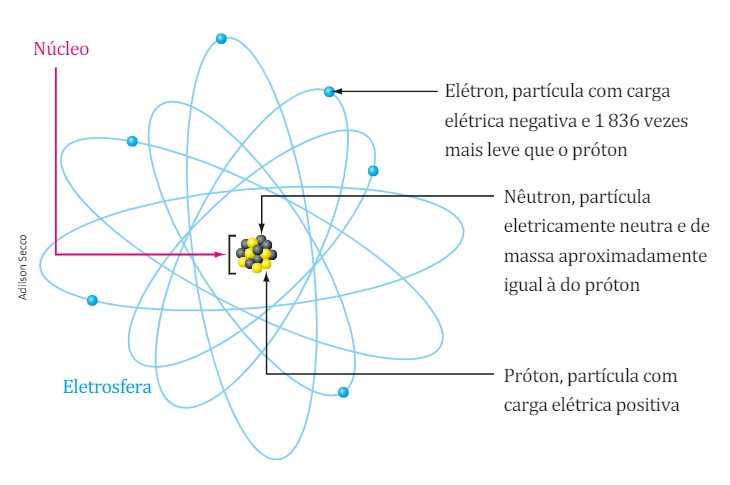

E-
A primeira particula descoberta, o elétron,
pelo cientista Thonsom.
Segundo ele, essa partícula, de carga negativa, permanece
girando ao redor do núcleo, em uma região denominada eletrosfera.
Com o avanço dos metodos científicos, e com a conclusão que os átomos eram disiveis, diferente da proposta de Dalton, descocobriram que ele era composto por três partículas subatômicas principais:
P+
A segunda particula descoberta, próton,
pelo cientista Rutheford.
A partícula com carga positiva, permace fixa no núcleo e
só sofre mudança com reações nucleares de fusão ou fissão.
A quantidade de prótons presente no núcleo de cada átomo recebe
um nome especial: Número Atômico, e é simbolizado
pela letra Z. O número atômico é o que determina
a diferença de um elemento para o outro.
N
Ainda pelo cientista Rutheford, foi descoberta a
existencia dos nêutrons, que, juntamente com os
prótons, formam o núcleo do átomo.
O nêutron é responsável pela estabilidade do átomo.
A soma dos prótons [Z] com os nêutrons [N]
formam o [A] - Número de massa.